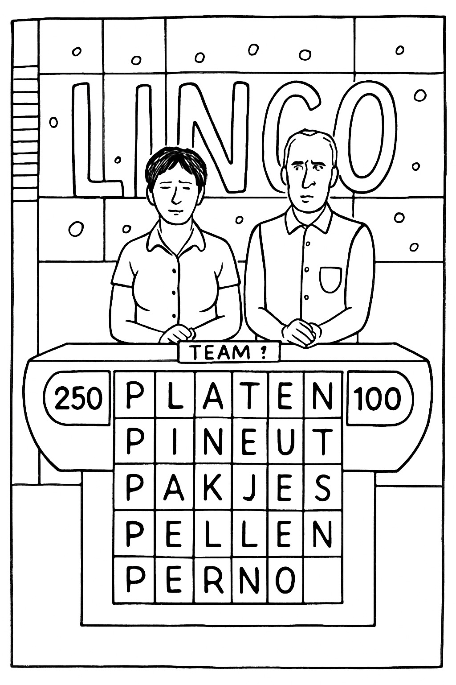
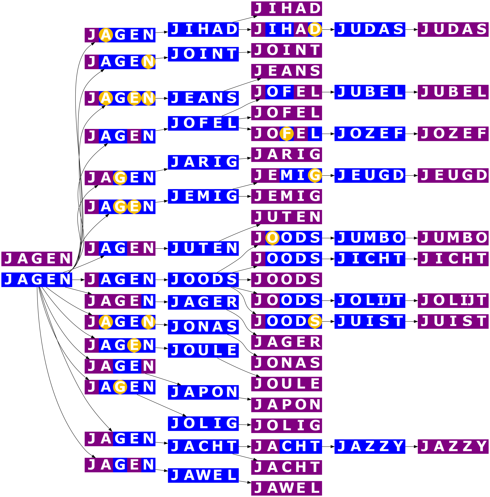

Lingo
%FATSOENLIJKE INTRO MET EEN VERHAALTJE Hoe moeilijk kan het zijn? Lingo is een uitdagender spelletje dan je vermoedt. En deelnemers die hun huiswerk niet doen? Die zijn niet om aan te zien.
Voordat ik mezelf opgeef voor een publieke afgang, zoek ik uit hoe je Lingo het beste kunt spelen. Ik moet een hoop vragen beantwoorden. Wat is het theoretisch optimale spel? Hoeveel beurten zijn er dan gemiddeld nodig om het woord te raden? En wat zijn de beste startwoorden per letter?
Ik ben niet de eerste die dit systematisch aanpakt. Zogenoemde systeemspelers bestaan al lang. Het “systeem” dat deze spelers gebruiken is in theorie eenvoudig, maar in de praktijk lastig. Het houdt in: onthoud voor iedere beginletter twee (of drie) woorden. Deze woorden moeten alle belangrijke letters bevatten (alle klinkers en veelvoorkomende medeklinkers) op min of meer handige plekken. Hoe beter je dit doet, hoe meer informatie je verzamelt en hoe groter de kans dat je het woord kunt raden.
Maar dit alleen is zeker geen perfect spel. Stel, je onthoudt voor elke letter twee beginwoorden en gebruikt die altijd direct achter elkaar. Dat is een tactische fout! Je hebt immers de opgehaalde informatie uit het eerste woord niet gebruikt om het best mogelijke tweede woord te kiezen. De meeste systeemspelers gebruiken drie vaste beginwoorden per letter, een ogenschijnlijk slimme strategie. Maar omdat deze spelers de opgehaalde informatie niet toepassen, verkleinen ze juist de kans om het woord te raden! Geen erg effectief systeem.
Een perfecte speler doet wat mij betreft twee dingen:
- [stopper=.]
- Ze raadt het woord altijd binnen vijf beurten.
- Over het gehele spel gebruikt ze het minst mogelijke aantal beurten.
Kan dat? Ik denk van wel. Is het ingewikkeld? Dat ook.
De perfecte speler heeft namelijk een beslisboom in haar hoofd. Dit begint met een perfect beginwoord. Afhankelijk van de feedback van dat woord kiest ze een perfect vervolgwoord. Op basis van de feedback van het tweede woord volgt wederom een onverbeterbaar vervolgwoord, enzovoort, tot je het woord hebt geraden. Dat is veel om te onthouden, zeg je? Dat klopt. Het scheelt dat Lingo niet alle woorden gebruikt; het moet wel leuk blijven. Het programma put uit een eigen woordenlijst. Het kostte de nodige moeite om deze te achterhalen.
[title=Welke woorden?,reference=welke-woorden]
Goed om te weten: je mag in Lingo alle woorden raden die in een woordenboek staan. J.P. beoordeelt streng doch rechtvaardig, zo mogen vervoegingen en samentrekkingen ook. Daar hoeft de perfecte speler zich geen zorgen over te maken.
De programmamakers zijn een stuk kritischer op de woorden die ze aan de deelnemers voorschotelen. Lingo gebruikt geen werkwoordsvervoegingen en alleen gangbare woorden. Het is immers minder leuk als de spelers of de mensen thuis het te raden woord helemaal niet kennen. Maar wat is een gangbaar woord? En hoe bepaalt Lingo dat?
Een gangbaar woord heeft een hoge prevalentie: veel mensen kennen het woord. Daar is onderzoek naar gedaan. Neem een woord en vraag proefpersonen om één van de vier definities te kiezen, waarvan er slechts één correct is. Simpel gezegd concludeerden de onderzoekers: hoe meer proefpersonen de juiste definitie kozen, des te bekender het woord was. Ik vermoedde dat Lingo woorden pas gebruikt bij een voldoende hoge herkenningsgraad onder het publiek. Ik testte deze theorie in de praktijk.
Ik keek 60 afleveringen uit verschillende tijdsperioden van Lingo en turfde alle woorden tot ik er duizend had. Minstens 95 van de Nederlandssprekenden kent nagenoeg al deze woorden. Soms wijkt Lingo af van de norm; ik kwam enkele zeer ongewone woorden tegen… Weet jij wat ze betekenen?
nopen 77 herkenningsgraad, mensa 76 herkenningsgraad, olmen 74 herkenningsgraad, berin 74 herkenningsgraad, cahier 71 herkenningsgraad, gewag 67 herkenningsgraad, pernod 57 herkenningsgraad,

Het prevalentieonderzoek is een goede benadering, maar niet perfect. Om de woordenlijst te bemachtigen, stuurde ik een mail met een dringend verzoek naar de producent van Lingo, DPG-media. Helaas kreeg ik geen antwoord. Ik kwam er in mijn onderzoek naar de producent wel achter dat er in het verleden een Lingo pc-cd-rom is uitgegeven. Een exemplaar met François Boulanger op de omslag. Hij spreekt je bemoedigend toe terwijl je digitaal lingoët. Dit spel maakt natuurlijk gebruik van de illustere woordenlijst. Met enig IT-vernuft achterhaalde ik deze lijst. En inderdaad: al mijn 1000 woorden komen in de lijst voor! Voltreffer!
In het totaal heeft Lingo een overzichtelijke set woorden die het gebruikt als raadbare woorden.
[tabel uit het boek]
Het doel van de perfecte speler: met zo min mogelijk zetten al deze woorden raden. In de lijst komen woorden met beginletter U het minst voor. Een mooie letter om een voorbeeld mee uit te werken.
[title=De letter U,reference=de-letter-u]
urine, uitje, uilig, uzelf, uilen, ultra, uiten, uiers, uraan, uiver, uniek, urnen. Dit zijn de 12 woorden met beginletter U die je in Lingo tegenkomt. Een systeemspeler kiest het woord met de meeste meest voorkomende letters: UIERS (drie klinkers én een R en een S? Onweerstaanbaar!). Maar dat is een slechte keuze! Lingo geeft feedback met kleuren: een paarse letter (P) staat op de juiste plek, een gele letter (G) zit in het woord maar op de verkeerde plek, en een blauwe letter (B) komt niet in het woord voor. Stel, dit is je feedback na het woord UIERS: UIERS. Er zijn dan maar liefst drie resterende woorden: uitje, uilen en uiten. Niet heel gunstig in een finale onder tijdsdruk.
Bij het optimale woord, UITEN, kun je altijd in de tweede beurt het woord raden. Elk woord kent namelijk een ander patroon in de feedback die het spel je geeft. De perfecte speler raadt UITEN en weet dan op basis van het resultaat altijd wat het antwoord moet zijn. Kijk zelf:

Bij de letter U heb je dus maar twee beurten nodig. Zeer efficiënt. Het woord raden binnen vijf beurten, ons eerste doel, is dus ruim gelukt. Om te kunnen bepalen of je over het gehele spel het minst mogelijke aantal beurten gebruikt, rekenen we het gemiddelde aantal beurten voor de letter U uit. Bij perfect spel zijn er in totaal 23 beurten nodig voor de letter U (zie figuur). Dat betekent dat een perfecte speler gemiddeld 1,92 beurten (23 beurten / 12 uitkomsten) nodig heeft voor de letter U. Daar kunnen we straks mee rekenen.
Voor andere beginletters is twee beurten te optimistisch, maar in drie beurten is veel mogelijk. Het is dan belangrijk om voor elk woordengroepje met dezelfde feedback een goed vervolgwoord te kiezen. Dit vervolgwoord moet maximale informatie geven over de resterende opties. Het gebruikte woord moet voor ieder nog mogelijk woord uit dat groepje een ander feedback-patroon opleveren. Om daar een idee bij te krijgen stappen we over naar de letter J.
[title=De letter J,reference=het-perfecte-spel]
De perfecte speler speelt Lingo en krijgt de beginletter J. Ze heeft al stevig gerekend en weet dat ze gemiddeld 2,2 beurten nodig heeft om het woord te raden, en nooit meer dan drie beurten.
In de figuur zie je dat JAGEN het beste beginwoord is. Dit woord levert 17 mogelijke feedbackpatronen op. Elk patroon vertelt de perfecte speler iets anders over de mogelijke vervolgwoorden. Geen van die feedbackpatronen heeft een hele grote groep aan vervolgopties. Na de eerste beurt heb je nog maximaal drie mogelijke woorden over. Als je bijvoorbeeld alleen de E positief (E of E) terugkrijgt, zijn JOFEL, JUBEL of JOZEF nog mogelijk. Met het juiste vervolgwoord maak je onderscheid tussen deze drie. Dat geldt voor alle feedbackpatronen op het eerste woord. Er zijn dus nooit meer dan drie beurten nodig.

[title=Gemiddeld aantal beurten,reference=gemiddeld-aantal-beurten]
Als je dit voor alle letters uitwerkt (en dat heb ik gedaan), ontdek je dat een perfecte speler gemiddeld 2,76 beurten nodig heeft. De U is de snelste letter, zoals we hebben gezien. De letter die gemiddeld het langste duurt is de K, met gemiddeld 2,91 beurten.
In deze vier grafieken kun je per letter en woordlengte zien hoeveel beurten nodig zijn. Bijvoorbeeld, bij 5-letterwoorden beginnend met de U zie je alleen een klein groen stukje. Want er zijn weinig woorden en ze worden allemaal in de tweede beurt geraden. De S heeft de meeste mogelijke woorden, maar de K is toch moeilijker: die letter heeft meer woorden die 5 beurten vereisen.
Je ziet dat hoe langer het woord is, hoe sneller je het kunt raden. Dat voelt in eerste instantie tegenintuïtief, tot je beseft dat hoe langer het woord, hoe meer feedback je ontvangt. Dan hoef je alleen nog zeer snel te kunnen denken.
8em to 0pt% -2em
[grafiek uit het boek]
to 0pt% -2em
[grafiek uit het boek]
to 0pt% -2em
[grafiek uit het boek]
to 0pt% -2em
[grafiek uit het boek]
%De letters Q, X en Y komen niet voor als beginletter bij Lingo
[title=Niet foutloos,reference=niet-foutloos]
De perfecte speler maakt geen fouten, minimaliseert het aantal beurten en loopt nooit het risico een woord niet te raden. Daarvoor moet ze echter een enorm aantal spelsituaties onthouden: 2119 voor vijfletterwoorden, 2710 voor zesletterwoorden, 2496 voor zevenletterwoorden en 3240 voor achtletterwoorden, wat neerkomt op 10.565 situaties. Voor de perfecte speler geen probleem, maar voor de normale mens wellicht een te grote opgave. Daarom laten systeemspelers het bij twee of drie vaste startwoorden per letter. Dat zijn er (26 - 3) 2 = 46 of (26 - 3) 3 = 69. Dat is te doen! Met die aanpak is het bij vijfletter-Lingo echter onmogelijk raadgarantie te geven.
Gelukkig is er een middenweg: voor sommige beginletters zijn er woordcombinaties die raadgarantie opleveren. Ofwel: als je de juiste twee startwoorden gebruikt, lukt het bij verder perfect spel altijd om binnen de vijf beurten het woord te raden. Je ontvangt dan zoveel informatie in de feedback dat de beslisboom die je dan nog moet aflopen veel korter is. Je moet nog steeds veel situaties uit je hoofd leren, maar wel véél minder dan wanneer je als perfecte speler aan de slag gaat. %TODO: plaatje platgeslagen boom voor J
Dit kan niet voor alle beginletters. Maar wel voor de onderstaande. Het totaal aantal woorden om te raden en het aantal beurten dat nodig is om al die woorden te raden is weergegeven. En daarmee kun je ook het gemiddelde aantal beurten per woord uitrekenen. Je kunt dus zien dat deze hoger is dan eerder.
[distance=0.5em]
Je ziet dat de B, H, L en R ontbreken. Voor deze beginletters bestaat geen combinatie van twee beginwoorden die raadgarantie oplevert. Als je dat wilt, zul je voor die letters de volledige boomstructuur uit je hoofd moeten leren. Alsnog vermindert dit flink het aantal spelsituaties dat je moet onthouden. Nog 5298. Dat is slechts de helft van de oorspronkelijke 10.565. Een aanzienlijke vermindering.
[title=Meer is minder (beurten, in dit geval),reference=goed-nieuws]
Voor zes-, zeven- en achtletter-Lingo kun je wél met raadgarantie voor iedere beginletter twee woorden uit je hoofd leren! Hoe meer letters, hoe meer informatie er beschikbaar is, en hoe sneller je de oplossing kunt raden. Er zijn niet heel veel meer woorden met die lengtes, want Lingo stelt strenge kwaliteitseisen aan zes-, zeven- en achtletterwoorden. Hieronder per beginletter de woordcombinatie die raadgarantie oplevert. [line=2.5ex]
[tabel uit het boek]
[title=Systeemspeler 2.0,reference=systeemspeler-2.0]
Bij veel beginletters is de systeemspeler 2.0 dus met twee vaste beginwoorden al goed op weg, al moet de speler voor vijfletterwoorden nog steeds ruim 5000 spelsituaties uit de beslisboom uit het hoofd leren. Maar het kan (iets) makkelijker. Er bestaan combinaties van 3 of zelfs 4 woorden die raadgarantie opleveren. Hoe meer optimale beginwoorden je gebruikt, hoe minder spelsituaties de speler moet onthouden, en hoe minder inspanning de voorbereiding kost.
De beginwoorden die je nodig hebt om elk woord met zekerheid te kunnen raden staan hieronder. In sommige gevallen, zoals bij de B voor vijfletterwoorden (boxer, bedam, bankt, bling en buste), zijn dat er vijf. Dan doe je perfect voorwerk voor je tegenstander en heb je er zelf niets meer aan. In de overige gevallen roep je om de beurt een van de beginwoorden, kijkt goed naar de feedback, en je raadt het woord! Met deze strategie hoeft de systeemspeler geen spelsituaties meer te onthouden, maar slechts 96 woorden. Als je accepteert dat er bij vijfletterwoorden met de B, G, H, K, L, P, R, S, en Z een klein risico bestaat dat je het woord niet raadt, is dit de beste strategie voor mensen met een minder goed geheugen.
[line=2.5ex]
[tabel uit het boek]
[line=2.5ex]
[tabel uit het boek]
[line=2.5ex]
[tabel uit het boek]
Hoe dan ook, je winstkansen zijn afhankelijk van een goede voorbereiding. Je zult moeten stampen. Hoeveel precies hangt af van hoe foutloos je wilt spelen. De perfecte speler raadt alle woorden, speelt een indrukwekkende finale en heeft geen leven meer. De systeemspeler 2.0 onthoudt de optimale woordcombinaties per letter (2, 3 of 4 woorden). Daarnaast stampt ze de beslisboom alleen voor de vijfletterwoorden met beginletter B, H, L of R. En de normale mens... tja, die blijft minder leuk om naar te kijken.